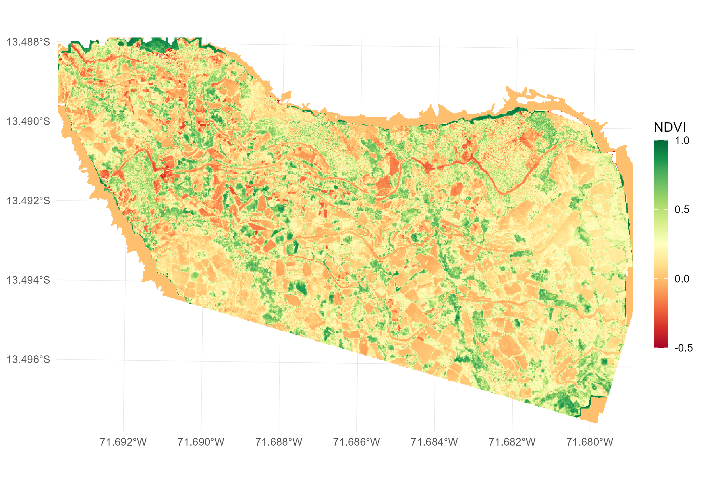
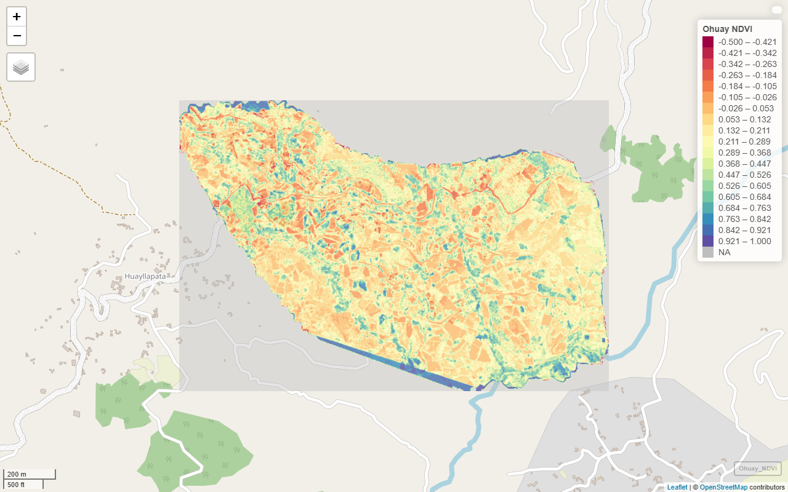

Case 01 - Orthomosaic Ingestion & Metric Calculation
Source:vignettes/case1_metrics_calculation.Rmd
case1_metrics_calculation.RmdExtracting ultra-high resolution vegetation and water metrics from UAV orthomosaics
1 Objective
Ingest UAV orthomosaic bands (Near-Infrared, Red, and Green) and compute two foundational environmental metrics: Normalized Difference Vegetation Index (NDVI) and Normalized Difference Water Index (NDWI).

2 Functions from drones4health
| Variable / Target | Function | Description |
|---|---|---|
| Multi-Band Stack Ingestion | d4h_read_stack() |
Ingests multi-band raster stacks and verifies that required spectral bands are present, halting with an informative error if any band is missing. |
| Vegetation Canopy | d4h_ndvi() |
Quantifies photosynthetic vigor and vegetative canopy cover from Near-Infrared and Red bands. |
| Water Detection | d4h_ndwi() |
Delineates open standing water surfaces and moisture accumulation from Green and Near-Infrared bands. |
| Unified Visualization | d4h_plot() |
Unified visualization: renders static
ggplot2 maps when interactive = FALSE, or
interactive web maps via mapview when
interactive = TRUE. |
3 Workflow
3.1 Libraries
We load the core spatial packages and dependencies required for drone remote sensing analysis:
3.2 Spatial Data Preparation & Multi-Band Stack Ingestion
We can ingest individual spectral band files or load a multi-band
GeoTIFF stack using d4h_read_stack(), which automatically
validates that all required bands are present:
# Option A: Ingest individual drone band GeoTIFF files
path_nir <- "img/Ohuay_NIR.tif"
path_r <- "img/Ohuay_R.tif"
path_g <- "img/Ohuay_G.tif"
# Option B: Ingest a multi-band stacked raster with automated band validation
# If any required band is missing, d4h_read_stack halts with an informative error
# r_stack <- d4h_read_stack(
# file_path = "img/Ohuay_Stack.tif",
# required_bands = c("NIR", "Red", "Green")
# )3.3 Metric Calculation: NDVI & NDWI
We compute the two environmental indices directly from the raster bands:
3.4 Unified Visualization (Static & Interactive)
d4h_plot() provides a single unified interface: setting
interactive = FALSE outputs a publication-ready
ggplot2 figure, while interactive = TRUE
renders an interactive mapview web map:
# 1. Static publication-ready cartography via ggplot2 (interactive = FALSE)
p_static <- d4h_plot(
x = r_ndvi,
interactive = FALSE,
palette = "viridis",
title = "UAV Canopy Density (NDVI)",
limits = c(-0.1, 0.9)
)
print(p_static)
# 2. Interactive web map exploration via mapview (interactive = TRUE)
m_interactive <- d4h_plot(
x = r_ndvi,
interactive = TRUE,
palette = "viridis",
title = "UAV Canopy Density (NDVI)"
)
m_interactive